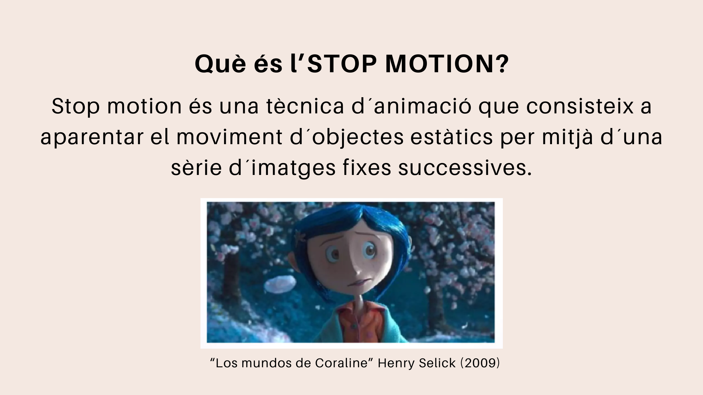
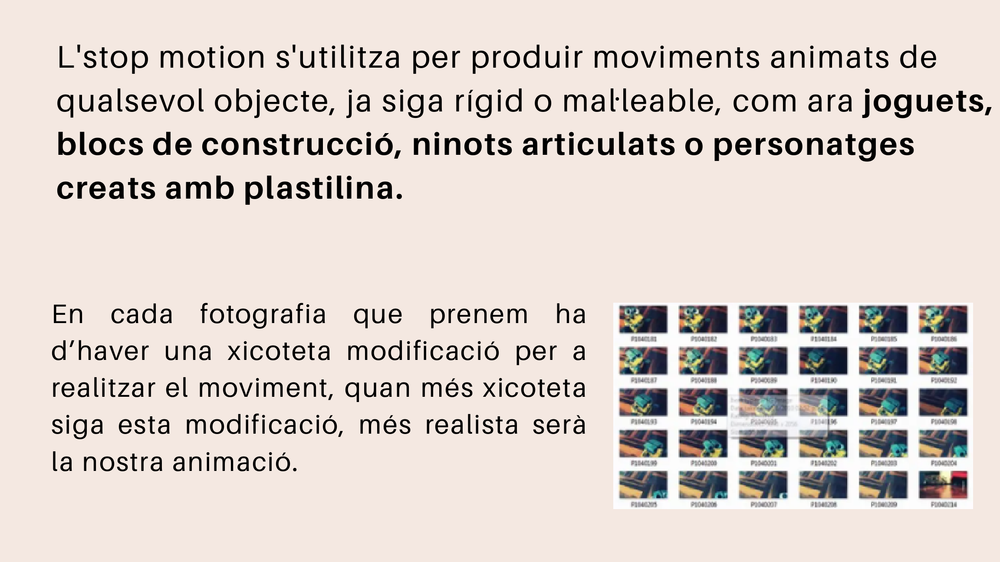
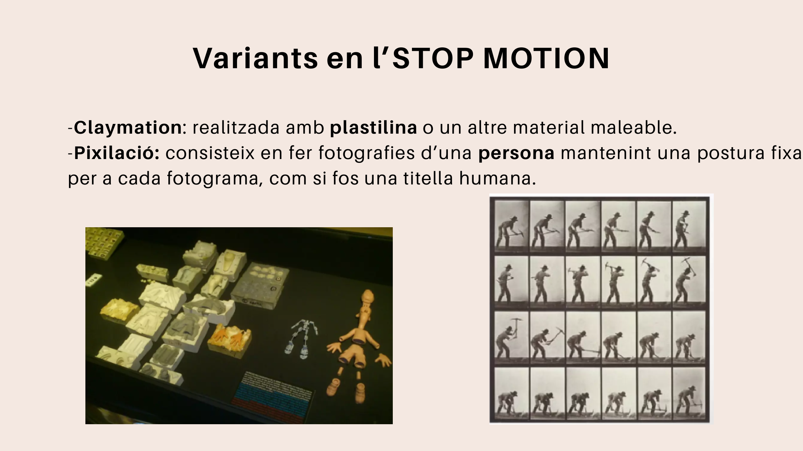
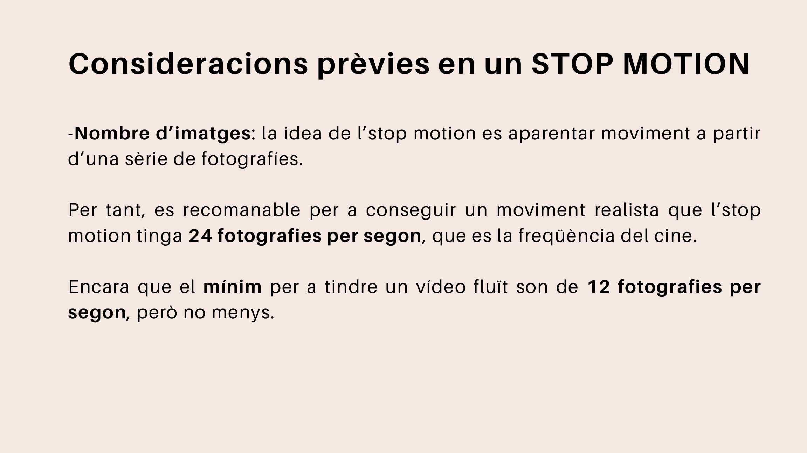
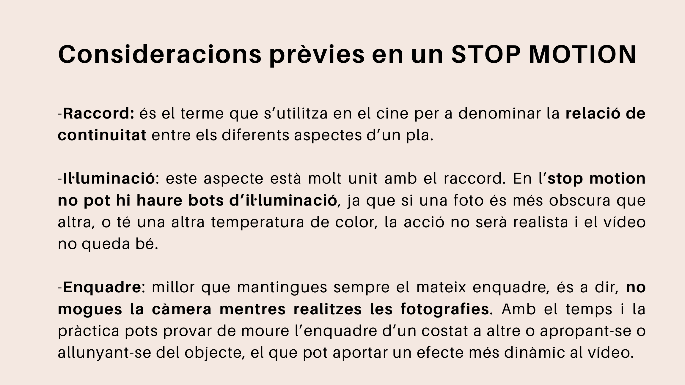

Què és l'stop motion?
L'stop motion és una tècnica d'animació que consisteix a aparentar el moviment d'objectes estàtics mitjançant una sèrie d'imatges fixes successives.

En cada fotografia que fem ha d'haver una xicoteta modificació. Com més menut siga el canvi entre una fotografia i la següent, més fluida i realista serà l'animació.
Una animació de stop motion no grava el moviment directament: el construeix fotografia a fotografia.
Objectes que podem animar
Podem utilitzar molts tipus de materials:
- joguets;
- blocs de construcció;
- ninots articulats;
- personatges de plastilina;
- objectes quotidians;
- figures de paper o cartolina.

Variants principals
Claymation
La claymation és una animació realitzada amb plastilina o altres materials mal·leables.
Aquest tipus de material permet modificar fàcilment la forma dels personatges, canviar expressions i crear moviments molt expressius.
Pixilació
La pixilació consisteix a fotografiar persones mantenint una postura fixa en cada fotograma, com si foren titelles humanes.

Nombre d'imatges
Per aconseguir moviment, necessitem moltes fotografies. En cinema es treballa sovint amb 24 imatges per segon, però en una activitat escolar podem treballar amb menys.
| Fotografies per segon | Resultat aproximat |
|---|---|
| 6 fps | Moviment molt tallat |
| 12 fps | Moviment acceptable per a classe |
| 24 fps | Moviment més realista |

Aspectes importants
Abans de començar cal controlar tres coses:
- Raccord: continuïtat entre les fotografies.
- Il·luminació: evitar canvis bruscos de llum.
- Enquadre: mantindre la càmera sempre estable.

<div class="admonition warning"><strong>Compte amb la càmera</strong> Si la càmera es mou sense voler, el vídeo final pot quedar confús i poc cuidat. Per això és molt recomanable utilitzar un trípode o un suport estable. </div>